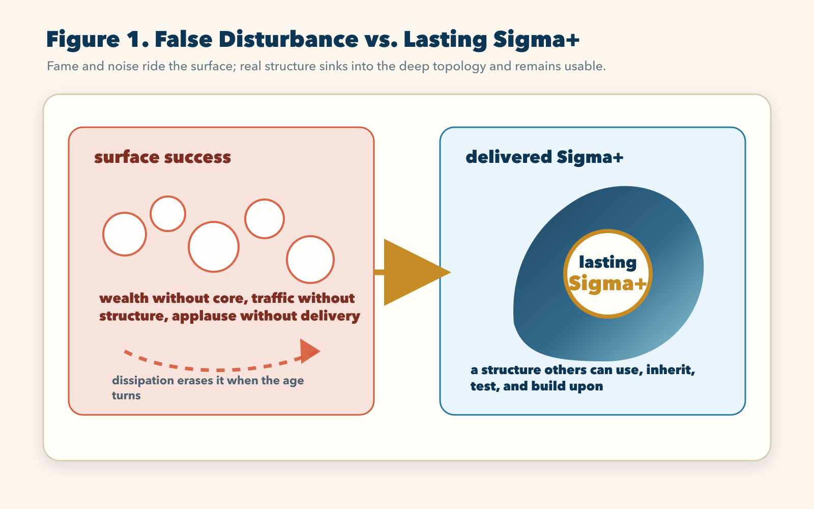
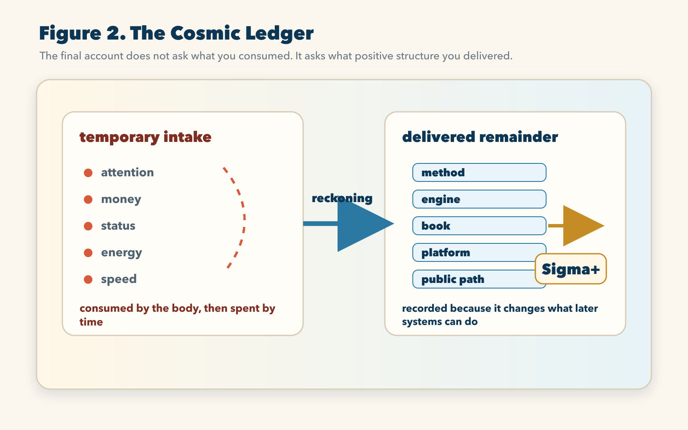
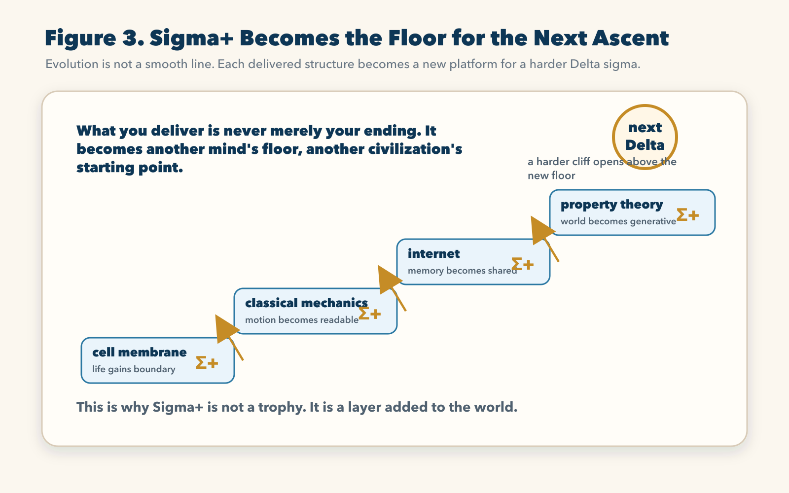
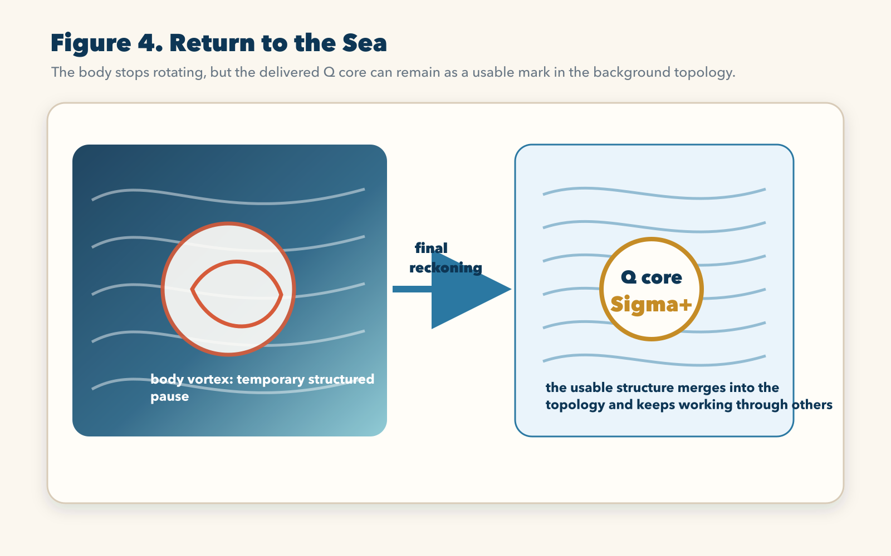

Chapter 8 | The Creator’s Ascent: Sigma+ and the Final Settlement of the Universe
1. The Bankruptcy of Ordinary Success
After rebuilding space, killing the false river of time, watching life rise as a structured pause, seeing empire collapse under its own cavity cost, and walking through the seven life-and-death gates of HFCD, we finally arrive at the question that no intelligent being can escape.
What are we trying to do in this violent sea?
We open boundaries, burn energy, bear misunderstanding, rebuild our methods, bury failed versions of ourselves, and continue rotating inside a background ocean that will not stop grinding us down. Why? For money? For fame? For comfort? For recognition? For the sweet chemical flash of being seen? For the temporary intoxication of power?
The old world calls these things success. Property Theory calls most of them surface disturbance.
This sentence must be understood with care, because it is not a moral insult. Wealth is not automatically false. Status is not automatically empty. Influence is not automatically poison. Attention is not automatically waste. The question is not whether a thing is glamorous. The question is whether it has a Q core, whether it has a chamber, whether it can survive dissipation, whether it can be used by another system after the first heat has gone.
A wave can be tall and still leave nothing. A foam crest can shine under the sun and vanish before the next wind arrives. A life can be busy, praised, photographed, followed, applauded, quoted, and still fail the final ledger. Why? Because the surface can move violently without building a deep structure.
This is the physical bankruptcy of ordinary success.
Ordinary success often measures intake. How much attention entered your field? How much money passed through your hands? How many people repeated your name? How many doors opened? How many numbers went up? These are not meaningless. They are forms of energy. But energy that enters a system is not yet existence. A system may inhale enormous energy and still leave no stable body. A flame can consume a forest and leave only ash.
The old social code confuses temporary intake with lasting structure. It sees the wave and calls it victory. It sees applause and calls it proof. It sees speed and calls it progress. It sees noise and calls it influence. But the background sea is not impressed by noise. The sea asks a different question: after the motion ends, what remains?
If nothing remains, the success was only eta, a disturbance.
Eta is not evil. Eta is the raw trembling of the background sea, the noise, the vibration, the unprocessed motion, the excitement before it becomes form. Every creation begins with disturbance. Every spark begins as a tremor. But if disturbance never passes into boundary, core, and delivery, it remains a surface event. It may feel enormous from inside the moment, but it has no deep address in the topology.
This is why a person can be famous in one decade and vanish from memory in the next. This is why companies that once seemed invincible can disappear like bubbles after one technological current turns. This is why entire schools of thought can dominate the conversation, fill conferences, generate slogans, and then leave no real instrument for the next generation. They were not always stupid. They were not always fraudulent. Many were energetic. Some were brilliant. But brilliance without crystallized structure is still only light on the surface.
The universe does not store surface brightness. It stores structure.

The diagram above is simple, but it contains the final judgment of this book. On the left is surface success: wealth without core, traffic without structure, applause without delivery. These things can fill the sky for a moment. They can produce the feeling of arrival. They can even buy time. But when the age turns, dissipation wipes them down. Their motion was real, but their remainder was weak.
On the right is delivered Sigma+. It is not merely a better wave. It is a structure that has sunk into the deeper layer. It can be inherited. It can be tested. It can be used by another person who never met the original creator. It can serve as a floor for future action. It can enter another system’s metabolism and help that system generate further order.
This difference is the difference between being noticed and being recorded.
Being noticed belongs to the surface. Being recorded belongs to the deep topology.
The creator must learn to despise the cheap intoxication of being noticed when it begins to replace the harder work of being recorded. This does not mean withdrawing from the world. It means entering the world with a harsher standard. Do not ask only whether the world reacts. Ask whether the reaction is being converted into structure. Do not ask only whether people cheer. Ask whether the cheer becomes a method, a tool, a memory, a protocol, a platform, a book, a system, a changed path. Do not ask only whether energy entered. Ask whether the energy has been folded into a body that can remain.
This is why Property Theory is not a philosophy of passivity. It is more demanding than ambition. Ambition wants to rise. Property Theory asks what will still stand after the rising has been burned by time.
2. Sigma+ as the Ultimate Currency of the Universe
If ordinary success is bankrupt, what is the real currency?
The real currency is Sigma+, positive integrated potential.
Sigma+ is not a mood. It is not optimism. It is not a pleasant result. It is not the feeling that something went well. It is the amount of positive structure that remains after a system has passed through generation, pressure, filtering, crystallization, boundary attack, delivery, and external use.
In plain language, Sigma+ is the part of your work that the world can still use after you are no longer there to explain it.
That sentence is the doorway.
If a thing can only exist while you are defending it, it has not yet become Sigma+. If a theory collapses the moment the author stops speaking, it has not become Sigma+. If a company works only when the founder personally pushes every piece, it has not become Sigma+. If a relationship remains peaceful only when one person constantly absorbs all cost, it has not become Sigma+. If a method cannot be repeated, inspected, or inherited, it has not become Sigma+.
Sigma+ is what survives explanation.
This is why the seventh HFCD gate is merciless. It does not ask whether you had a beautiful internal model. It does not ask whether your suffering was profound. It does not ask whether you had visions. It asks whether the structure can cross into the hands of others and still function.
Consider a method. A method becomes Sigma+ when another person can use it to reduce confusion, make a better decision, avoid a failure, or produce a result that would not have been possible without it. A vague insight is not enough. A slogan is not enough. A method must change the path of action.
Consider a book. A book becomes Sigma+ when it does more than entertain the private imagination. It must reorganize perception. It must give the reader a new instrument. The reader must leave with a changed eye, a changed standard, a changed capacity to distinguish surface noise from structural law. A book that merely flatters the reader’s old beliefs is not Sigma+. It is comfortable eta.
Consider a platform. A platform becomes Sigma+ when it allows others to build, remember, exchange, test, or create beyond the founder’s immediate presence. The platform is not its launch announcement. It is not its interface. It is not its valuation. It is the new action space it opens.
Consider a scientific framework. A framework becomes Sigma+ when it does not simply rename phenomena, but gives later minds a path to generate, inspect, challenge, extend, and correct. It must be strong enough to guide construction and honest enough to reveal failure. A closed doctrine cannot become Sigma+. It can gather believers, but it cannot become a living floor.
This is the highest standard of creation: produce something that does not need your constant breath in order to remain alive.

The cosmic ledger does not record intake as final value. Attention, money, status, energy, and speed may all enter a life or system, but they are temporary intake. They are fuel. Fuel is necessary, but fuel is not the destination. A creator who spends a lifetime increasing intake while producing no delivered remainder has built a furnace, not a civilization.
On the other side of the ledger stands delivered remainder: method, engine, book, platform, public path. These are examples, not limits. The essential point is that something has crossed from private intensity into shared usability. It can be used after the heat of its birth has cooled.
This is why Sigma+ is an anti-entropic miracle. It is not anti-entropy in a childish sense, as if it magically cancels the second law of thermodynamics. It is anti-entropic in the structural sense: within a world where unheld forms tend to scatter, Sigma+ is a locally integrated remainder that resists scattering by becoming useful to other systems. It does not float above the sea. It anchors itself in the sea.
Every true civilization is a stack of Sigma+.
Language is Sigma+ because it allows memory to move between bodies. Writing is Sigma+ because it lets thought survive the death of the speaker. Mathematics is Sigma+ because it compresses relations into portable forms. The cell membrane is Sigma+ because it gives life a boundary. Classical mechanics is Sigma+ because it makes motion calculable at a certain scale. The internet is Sigma+ because it turns isolated memory into networked memory. A legal system, when it actually stabilizes cooperation, is Sigma+. A trustworthy bridge is Sigma+. A reproducible experiment is Sigma+. A well-designed tool is Sigma+. A parent who gives a child a stable inner law has produced Sigma+ inside the child’s future.
Sigma+ is the deep remainder of order.
Once this is understood, the creator’s life becomes cleaner. The question is no longer, “How do I appear successful?” The question becomes, “What positive integrated remainder am I building?” That one shift burns away half of human confusion. It burns away the obsession with appearances. It burns away the hunger for empty praise. It burns away the addiction to motion without delivery.
It also burns away cowardice.
Because if Sigma+ is the true currency, then hiding behind untested brilliance is no longer acceptable. A private genius that never delivers is an unspent storm. A plan that never meets resistance is a palace built in warm fog. A theory that never touches the world remains a beautiful ghost. To produce Sigma+ is to accept the cost of embodiment. The creator must let the work become vulnerable to use.
This vulnerability is not weakness. It is the price of entry into reality.
3. The False Comfort of Personal Achievement
There is a subtler trap than ordinary success: personal achievement that feels deep but still remains private.
A person may discipline the body, sharpen the mind, read many books, build a strong identity, and still produce little Sigma+. This sounds harsh, but it is necessary. Inner cultivation matters. Without it, the Q core cannot form. But inner cultivation is not the final ledger. It is the preparation of the engine, not the road it opens.
Many intelligent people become addicted to preparation. They refine themselves endlessly. They collect frameworks, languages, practices, theories, methods, and identities. They become rich in internal vocabulary and poor in delivered structure. They are always about to create. Always about to publish. Always about to launch. Always about to test. Always about to cross the boundary. Their inner world becomes a polished chamber that never opens.
Property Theory calls this a sealed vortex.
A sealed vortex can be elegant. It can even be stable. But if it never generates Sigma+, the sea eventually reclaims it. The structure was too private. It did not enter the shared topology. It did not become part of another system’s action path.
This is why the final chapter cannot end with self-realization. Self-realization is not enough. The creator must become a bridge between inner crystallization and outer delivery. The point is not merely to know oneself. The point is to produce a structure through which reality is changed.
The same law applies to a theory. A theory that only makes its author feel complete is not yet a theory in the full sense. It may be a private myth. It may be a psychological shelter. It may be a beautiful internal architecture. But to become Sigma+, a theory must open a path: a way to explain, generate, compare, test, revise, build, teach, or decide. It must provide leverage beyond the author’s feeling of insight.
The same law applies to love. Love that remains only an emotional intensity is not yet Sigma+. It becomes Sigma+ when it creates a durable chamber in which another life can grow, repair, orient, and become more real. A relationship that consumes passion but leaves no stable structure is surface fire. A relationship that forms trust, discipline, memory, courage, and future capacity is positive integrated remainder.
The same law applies to civilization. A civilization does not become great because it produces spectacles. It becomes great because it leaves structures that still hold after the spectacle ends: roads, institutions, standards, language, archives, tools, disciplined methods, living metaphors, and shared ways of preserving truth under pressure.
The final settlement is therefore not sentimental. It is architectural.
The universe asks: what did you build that could keep working?
4. The Endless Path of Evolution
Now we can understand the phrase “the endless path of evolution” with greater precision.
Evolution is not a smooth upward line. It is not the gentle unfolding of improvement. It is a sequence of violent foldings in which one generation’s delivered Sigma+ becomes the floor for the next generation’s Delta sigma.
This is the hidden staircase of the universe.
When a single-cell organism forms a membrane, it produces Sigma+. That membrane is not merely a feature. It is a new floor. Once boundary exists, a new world of metabolism, protection, internal difference, and external relation becomes possible. Later structures stand on that floor.
When multicellular life emerges, it produces another Sigma+. Cells no longer merely survive as separate units. They enter coordinated relation. A body becomes possible. Organs become possible. Nervous systems become possible. Movement, sensation, and memory become deeper.
When language appears, another floor is laid. Experience no longer dies inside one body. It can move. It can be compressed, transmitted, corrected, amplified. A mind can inherit another mind’s wound and another mind’s discovery.
When writing appears, another floor is laid. Memory escapes the limits of breath. The dead can still teach. Law can outlive the ruler. Numbers can be checked. A civilization can speak to itself across centuries.
When classical mechanics appears, another floor is laid. Motion becomes readable. Bridges, engines, artillery, astronomy, industry, and modern engineering all stand on that layer. Newton is not important because his name is famous. Newton is important because part of his structure became a floor.
When the internet appears, another floor is laid. Memory becomes networked. The distance between thought and distribution collapses. A small mind can touch the global sea. A private manuscript can become a public object. A new kind of collective metabolism becomes possible.
When Property Theory appears, it attempts to lay another floor: a way to stop treating the world as an empty room filled with separate things, and begin reading it as a light-fluid background sea where existence is a structured pause, relation is a chamber, time is a ledger, life is maintained order, and creation is the production of Sigma+.
Whether a structure truly becomes a floor is decided by use. A claim does not make it a floor. A title does not make it a floor. A powerful feeling does not make it a floor. Only repeated use under pressure reveals whether the layer holds.
But once a layer holds, it changes the starting height of future beings.

The diagram shows this law as a staircase. Each completed Sigma+ becomes a platform. But no platform is the end. Above every platform a new cliff appears. The cell membrane creates the floor for life, but life then faces harder problems. Classical mechanics makes motion readable, but it opens the way toward deeper questions about fields, relativity, and quantum structure. The internet makes memory shared, but it opens the harder cliff of truth, meaning, attention, and artificial intelligence. Property Theory, if it becomes a real floor, does not end inquiry. It raises the ground from which new inquiry begins.
This is why a creator must not cling to the work as a private monument. The work is not truly complete until it can be stepped on.
That sentence may feel severe, but it is the honor of creation. A bridge is not insulted when people walk across it. A language is not humiliated when children use it without knowing its inventors. A method is not diminished when later minds improve it. A true creator does not demand that the future kneel before the structure. The creator demands that the structure hold enough weight for the future to climb.
This is the difference between a trophy and a floor.
A trophy points backward to the achievement of its owner. A floor points forward to the action of those who will stand on it. Trophy creation seeks admiration. Floor creation seeks continuation. Trophy creation wants to be protected from use. Floor creation wants to be tested by use. Trophy creation says, “Remember me.” Floor creation says, “Stand here and go higher.”
Sigma+ is floor creation.
Therefore the highest ambition is not to be the last word. The highest ambition is to become a layer that makes the next word possible.
5. Death, Return, and the Deep Ledger
At the edge of the final question, the body appears again.
The body is a temporary vortex. It is not nothing. It is not an illusion. It is a magnificent structured pause in the background sea. For a while, the body holds boundary, metabolism, memory, relation, pain, desire, thought, and action. It gathers energy, defends a Q core, fights dissipation, speaks, builds, loves, wounds, repairs, and tries to leave a mark.
But the body is not permanent.
One day the structured pause ends. The vortex loosens. The boundary cannot hold. The metabolism stops. The private chamber that carried the name, face, breath, habit, and voice begins to return to the wider sea.
The old worldview calls this extinction. Property Theory gives a colder and more demanding answer.
If a life produced only eta, then yes, when the boundary breaks, little remains. The waves continue, but the specific pattern dissolves. The person may have consumed energy, created noise, chased images, reacted to currents, repeated borrowed desires, and filled days with motion. But if no Q core was crystallized into deliverable form, if no Sigma+ entered the world, the final ledger has little to preserve.
This is not cruelty. It is physics.
The background sea cannot store every temporary disturbance. If it did, nothing could move. The sea filters. It dissipates weak forms. It erases unheld turbulence. It carries forward what has been integrated deeply enough to become part of future structure.
But if a life produced Sigma+, then death is not simple erasure. The body vortex ends, but the delivered structure remains in the topology. The method continues to guide decisions. The book continues to reorganize eyes. The tool continues to amplify hands. The platform continues to connect minds. The child continues to carry an inherited law. The institution continues to hold cooperation. The sentence continues to ignite courage in someone who was not yet born when it was written.
This is not mystical comfort. It is structural continuation.
The creator does not defeat death by preserving the private body. The creator crosses death by converting private life into public structure.

In the diagram, the body vortex dissolves back into the sea. That part cannot be avoided. The temporary structured pause has a cost, a duration, and an end. But the delivered Q core and Sigma+ do not dissolve in the same way. If they have truly been embedded, they become marks in the background topology. They remain usable. They keep working through others.
This is the creator’s final exemption.
Not exemption from pain. Not exemption from failure. Not exemption from fatigue. Not exemption from being misunderstood. Not exemption from death of the body.
The exemption is deeper: what has been delivered as Sigma+ is no longer trapped inside the original body’s lifetime.
It can be called again.
Every time another mind uses the structure, the creator’s rotation continues. Every time another system stands on the floor, the creator’s work participates in a new state transition. Every time the delivered form prevents confusion, strengthens a boundary, creates a tool, guides a decision, repairs a life, or opens a new cliff, the original vortex is no longer merely past. It has become part of the operating structure of the world.
This is why Property Theory can say, with severity and grandeur:
You do not merely die if you have delivered Sigma+. You return to the background sea as usable geometry.
6. The Creator’s Final Discipline
The final chapter must now become practical.
If Sigma+ is the ultimate currency, how should a creator live tomorrow morning?
First, stop worshiping the surface reaction.
Surface reaction is useful data, but it is not the final judge. Attention may reveal a current. Criticism may reveal a boundary. Silence may reveal weak resonance. Praise may reveal temporary alignment. But none of these is Sigma+. A creator uses reaction as input, not as identity. To live by reaction is to become foam.
Second, force every spark toward a chamber.
Do not let ideas remain beautiful inside the mind. Give them form. Draw the diagram. Write the page. build the prototype. State the rule. Create the smallest cavity that can be attacked by reality. If the spark dies, record the death. If it survives, fold it again.
Third, protect the Q core.
Every creation needs an inner law that cannot be traded away without destroying the body. For a scientific framework, this may be a principle of generation and testability. For a company, it may be a user promise. For a life, it may be a boundary of dignity. For a book, it may be the voice that cannot be diluted into market blandness. Without Q core, expansion becomes infection.
Fourth, accept boundary attack.
A structure that has not been attacked is still soft. Do not confuse comfort with confirmation. Put the work where it can be hit. Let readers misunderstand it. Let users strain it. Let cost expose it. Let data embarrass it. Let the outside world show where the cavity is weak. Every attack that does not destroy the Q core becomes strengthening.
Fifth, deliver before the inner world becomes a prison.
There is a time to refine, and there is a time to cross. Many creators die at the border because they keep polishing the chamber after the structure is already strong enough to meet the world. Perfection can become a coward’s robe. Delivery is the passage through inertia. It is painful because the work stops being yours alone.
Sixth, measure the remainder.
After delivery, ask what changed. Did someone use it? Did it reduce confusion? Did it become a tool? Did it create a path? Did it survive beyond the original excitement? Did it allow another system to do something it could not do before? If yes, Sigma+ has begun. If no, return to the gates.
Seventh, build for continuation.
Do not design the work so that it must always orbit your ego. Document it. Clarify it. Make its principles portable. Give later minds handles. Let the work become a floor. If the work can only survive as a monument to your personal intensity, it is still too small.
This is the creator’s discipline.
It is harder than ambition because it removes the cheap rewards. It is harder than self-expression because it requires the expressed thing to survive use. It is harder than genius because genius can remain private, but Sigma+ must become public structure. It is harder than faith because faith can declare victory before the world answers, while Sigma+ must be recorded in the world.
But it is also cleaner.
Once Sigma+ becomes the goal, much of life becomes less confusing. You know why some victories feel empty: they produced no remainder. You know why some failures become precious: they revealed the next boundary. You know why some small works matter more than grand performances: they became usable. You know why some people remain alive inside history long after their bodies vanished: they left floors.
The creator is not the one who shines the brightest on the surface.
The creator is the one who leaves a structure the sea cannot easily erase.
7. Welcome to Your Universe
We have reached the end of this first great movement.
We began by smashing the empty room. The universe was not a dead container filled with isolated objects. It was a light-fluid background sea, a living field of tension, relation, and structured possibility.
We saw that matter is not a hard little thing sitting inside emptiness. Matter is a structured pause, a vortex that remains visible because the background sea has been folded into a stable pattern.
We saw that time is not a river. Time is a ledger. It records transitions, costs, delays, and irreversible payments. A thing has time because it must maintain its structure through change.
We saw that force is not magic action across a void. Force is the movement of gradients through relation chambers. Influence does not jump across emptiness; it travels through the topology of the sea.
We saw that life is not a miracle dropped into matter. Life is matter that learned to maintain a Q core through metabolism, boundary, memory, and action.
We saw that empire, money, power, and social scale are not exempt from physics. They rise when cavities hold, and they collapse when cavity cost exceeds core integration.
We saw that creation is not inspiration. Creation is HFCD: spark, folding, crystallization, delivery. It is the discipline of turning Delta sigma into delivered Sigma+ through seven gates of pressure.
Now the final sentence becomes possible:
The world is not a blind box of randomness and magic. It is an ocean of potential differences, tensions, cavities, cores, costs, and geometric laws. To live unconsciously is to be pushed by its currents. To create is to read the currents, open a chamber, guard the core, cross resistance, and leave Sigma+ behind.
Do not ask the universe for permission to exist. Existence is not granted by permission. Existence is earned by structure.
Find your Delta sigma.
Open your Pi chamber.
Crystallize your Q core.
Pass through the gates.
Deliver your Sigma+.
And when your temporary vortex finally returns to the sea, let it return with a structure deep enough that the sea itself must remember your shape.
Creator, welcome to your universe.
Reader Comments
Reading is open. Comments are submitted for review before public display.